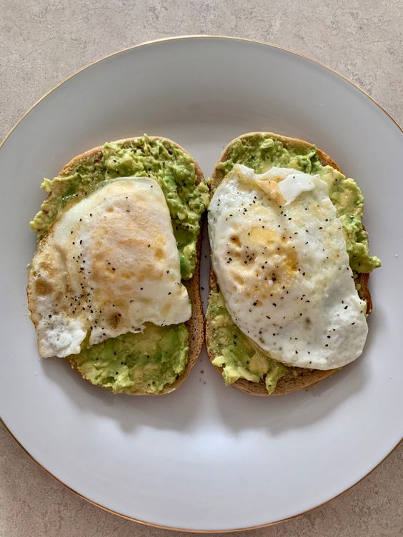

Avocado Toast

Description
The only avocado toast everyone should be having. I could eat this for breakfast lunch or dinner!!
Ingredients
- 2 pieces of bread
- 1 tbsp olive oil
- 1 ripe avocado
- 2 tbsp chopped onions
- 2 eggs
- salt,pepper and garlic powder to taste
Steps
- Toast the bread, while the bread is toasting get started on the eggs. Heat the pan on a medium high heat and add in the oil.
crack the eggs in the pan. cook to your liking.
- After the bread is toasted smash avocados on the toast and sprinkle the onions and mix with the avocado.
Add salt, pepper and garlic powder as needed.
- Top the avocado with the cooked eggs and add salt pepper and garlic powder to taste.